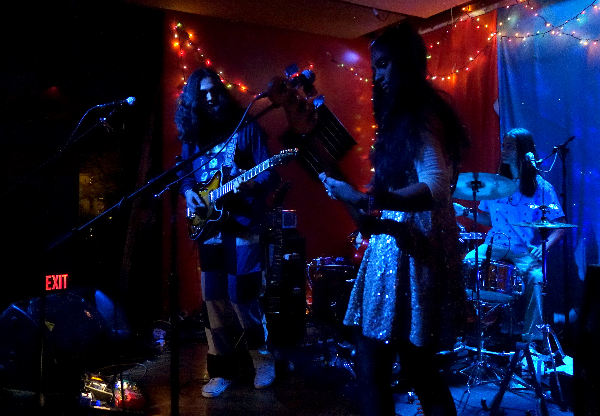
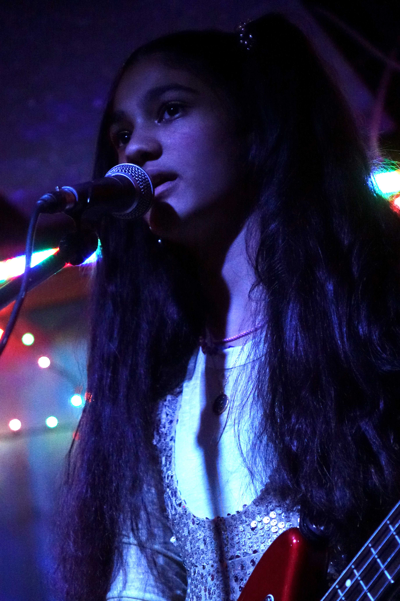

Drona The Band performs at Café Berlin for the Dismal Niche Indie Music Festival. The sibling band has grown in popularity around Columbia and have performed for various festivals and at many venues. Arjuna, Surya and Pasha Raghu started their band in 2020 with Darkroom Records, a free program for Columbia Public School students to work and produce music. Since then, they’ve performed for True/False Film Fest, Dismal Niche, First Friday and many others. The three siblings are multi-instrumentalists and have taught themselves how to play most of their instruments and most of their recording and writing process.

Drona the Band perform for the Dismal Niche indie music festival during the opening event at Café Berlin. The band consists of three siblings, Arjuna, 18, Surya, 15, and Pasha, 13, who are all still in school.
Surya plays the drums in a performance with his siblings at Café Berlin. “I think sibling bands have a special connection with each other because they have known each other for so long, so they can think similarly, and musically,” Surya said.
Pasha presses on the frets of her bass as she plays along to the music. Pasha learned how to play bass days before an event to be able to perform with her brothers. She can play any song by ear, her brother Arjuna said.

Pasha plays the bass and sings during their performance of “I can fall I don’t mind” during the Dismal Niche indie music festival. “It's super easy to practice and everything,” Pasha said. “It's also super nice because we all think similarly since we're related. So, if we have an idea that we want somebody else to add something to, it's easy for them to put their idea with it.”
Surya hits the hi-hat cymbals during their run-through of “lotus” at Café Berlin. Surya and Arjuna wrote songs that they wanted to try performing but couldn’t think of a way to do so. They were invited to play at the 2020 Darkroom Records Showcase at Stephens Lake Park and came up with the name “Drona” and created their logo a day before they performed.
Arjuna strums his electric guitar during their song “geometry jam” at Café Berlin. “When I'm recording, I usually do a demo, and then Surya comes in and plays a similar drumbeat over it and just kind of takes what I do as guidelines,” Since we share the same musical interests and inspirations, it's coherent and tied together under the same kind of sound.”